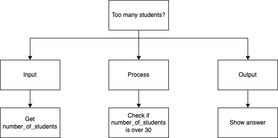
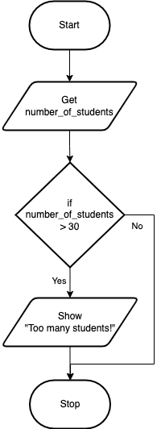

If…Then
The If…Then structure is a conditional statement, or sometimes referred to as a decision structure. It is used to perform a section of code if and only if the condition is true. The condition is checked by using a Boolean statement. If the condition is not true (meaning false), then the section of code is not performed, it is just passed over. The form of an If…Then statement is:
The indentation (usually 2 or 4 spaces, NOT A TAB, except for languages like Go!), used in the If…Then statement is a coding convention used in almost every language. It is there to make the statement easier to read. It has no effect on how the code works (except in languages like python), and could be ignored; however, it is REALLY BAD programming style not to have them. You will also notice that some programming languages like to place the Boolean expression in brackets, while others do not. It is just style, but you should follow the language’s conventions.
Here is a problem that can be solved using an If…Then statement. I have a class that can only hold 30 students because that is how many chairs I have. Ask the user to enter a number of students and tell me if I have too many students for the number of chairs I have.
The top-down design will have decision logic in it. You do not use a diamond in a top-down design, you still only use rectangles. Here is what a top-down design might look like for this problem:
Top-Down Design for If…Then statement
Remember from the section on flowcharts, the diamond shape represented decisions. The If…Then statement is the translation of a decision in a flowchart to code. Note that you MUST mark the, “Yes”, and, “No”, path, so that people can follow the flow of logic. The above examples would look like the following in a flowchart:
Flowchart for If…Then statement
You will also be using If…Then statements in pseudocode. The above problem looks like this in pseudocode. Note that you do indent when you are inside an If…Then statement in pseudocode. Also note that “IF”, “THEN” and “ENDIF” are all bold and CAPS:
Pseudocode for If…Then statement
In the code examples below, if the variable numberOfStudents (or number_of_students), happens to be a number that is greater than 30 (say 32), the next line of code is performed. If the variable is not greater than 30 (say it is exactly 30), then the next line of code is skipped over and NOT performed. Note that the number of chairs does not change often in my room, so I will use a constant to hold that value.
Code for If…Then statement
1// Copyright (c) 2020 Mr. Coxall All rights reserved.
2//
3// Created by: Mr. Coxall
4// Created on: Sep 2020
5// This program checks if there is over 30 students
6
7#include <stdio.h>
8
9int main() {
10 // this function checks if there is over 30 students
11 const int MAX_STUDENT_NUMBER = 30;
12 int numberOfStudents;
13
14 // input
15 printf("Enter the number of students: ");
16 scanf("%d", &numberOfStudents);
17
18 // process
19 if (numberOfStudents > MAX_STUDENT_NUMBER) {
20 // output
21 printf("Too many students!\n");
22 }
23
24 printf("\nDone.\n");
25 return 0;
26}
1// Copyright (c) 2020 Mr. Coxall All rights reserved.
2//
3// Created by: Mr. Coxall
4// Created on: Sep 2020
5// This program checks if there is over 30 students
6
7#include <iostream>
8
9int main() {
10 // this function checks if there is over 30 students
11 const int MAX_STUDENT_NUMBER = 30;
12 int numberOfStudents;
13
14 // input
15 std::cout << "Enter the number of students: ";
16 std::cin >> numberOfStudents;
17
18 // process
19 if (numberOfStudents > MAX_STUDENT_NUMBER) {
20 // output
21 std::cout << "Too many students!\n";
22 }
23
24 std::cout << "\nDone." << std::endl;
25}
1/* Created by: Mr. Coxall
2 * Created on: Sep 2020
3 * This program checks if there is over 30 students
4*/
5
6using System;
7
8/*
9 * The Program class
10*/
11class Program {
12 static void Main() {
13 // this function checks if there is over 30 students
14 const int MAX_STUDENT_NUMBER = 30;
15 int numberOfStudents;
16
17 // input
18 Console.Write("Enter the number of students: ");
19 numberOfStudents = Convert.ToInt32(Console.ReadLine());
20
21 // process
22 if (numberOfStudents > MAX_STUDENT_NUMBER) {
23 // output
24 Console.WriteLine("Too many students!");
25 }
26
27 Console.WriteLine("\nDone.");
28 }
29}
1/**
2 * Created by: Mr. Coxall
3 * Created on: Sep 2020
4 * This program checks if there is over 30 students
5 */
6
7package main
8
9import "fmt"
10
11func main() {
12 // this function checks if there is over 30 students
13 const maxStudentNumber int = 30
14 var numberOfStudents int
15
16 // input
17 fmt.Print("Enter the number of students: ")
18 fmt.Scan(&numberOfStudents)
19
20 // process
21 if numberOfStudents > maxStudentNumber {
22 // output
23 fmt.Println("Too many students!")
24 }
25
26 fmt.Println("\nDone.")
27}
1/*
2 * This program checks if there is over 30 students
3 *
4 * @author Mr Coxall
5 * @version 1.0
6 * @since 2020-09-01
7 */
8
9import java.util.Scanner;
10
11public class Main {
12 public static void main(String[] args) {
13 // this function checks if there is over 30 students
14 final int MAX_STUDENT_NUMBER = 30;
15 int numberOfStudents;
16
17 // input
18 Scanner input = new Scanner(System.in);
19 System.out.print("Enter the number of students: ");
20 numberOfStudents = input.nextInt();
21
22 // process
23 if (numberOfStudents > MAX_STUDENT_NUMBER) {
24 // output
25 System.out.println("Too many students!");
26 }
27
28 System.out.println("\nDone.");
29 }
30}
1/* Created by: Mr. Coxall
2 * Created on: Sep 2020
3 * This program checks if ther is over 30 students
4*/
5
6const prompt = require('prompt-sync')()
7const MAX_STUDENT_NUMBER = 30
8
9// input
10const numberOfStudents = parseInt(prompt('Enter the number of students: '))
11
12// process
13if (numberOfStudents > MAX_STUDENT_NUMBER) {
14 // output
15 console.log("Too many students!")
16}
17
18console.log("\nDone.")
constants.py
1#!/usr/bin/env python3
2"""
3Created by: Mr. Coxall
4Created on: Sep 2020
5This module holds constants
6"""
7
8# constant definition
9MAX_STUDENT_NUMBER = 30
main.py
1#!/usr/bin/env python3
2"""
3Created by: Mr. Coxall
4Created on: Sep 2020
5This module shows checks if over 30 students
6"""
7
8
9from constants import MAX_STUDENT_NUMBER
10
11
12def main() -> None:
13 """The main() function checks if over 30 students, returns None."""
14
15 # input
16 number_of_students = int(input("Enter the number of students: "))
17
18 # process
19 if number_of_students > MAX_STUDENT_NUMBER:
20 # output
21 print("Too many students!")
22
23 print("\nDone.")
24
25
26if __name__ == "__main__":
27 main()